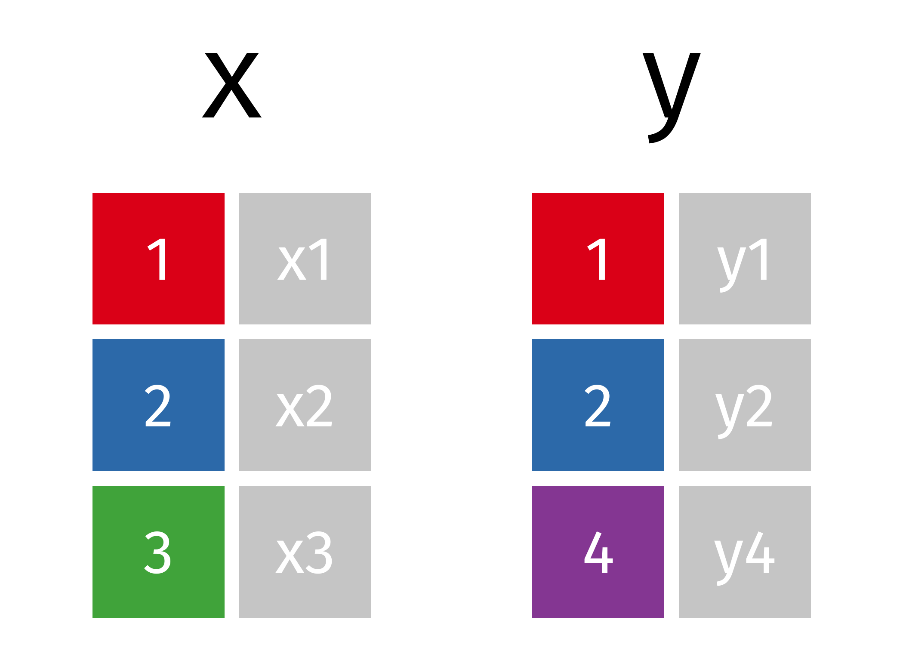

import pandas as pd12 Relational data
In many data projects, we work with more than one table. A product’s description might be in one table, customer demographics in another, and transaction records in yet another. To make sense of these interconnected datasets, we need to combine them in ways that preserve the relationships between them.
This is the world of relational data—data stored in multiple related tables. Each table gives us a piece of the story, but we only get a full picture when we connect the pieces together.
To do that, we use joins, which allow us to merge tables using key variables they have in common. In this chapter, we’ll build up your understanding of joins in pandas and give you hands-on experience combining data from multiple sources.
By the end of this lesson you’ll be able to:
- Use various mutating joins to combine variables from two tables.
- Join two tables that have differing common key variable names.
- Include an indicator variable while joining so you can filter the joined data for follow-on analysis.
Before we dive into code, watch this short video for a practical overview of how to join DataFrames in pandas. It walks through key concepts like different types of joins and when to use them. After watching, you’ll be ready to roll up your sleeves and apply these techniques in the hands-on examples that follow.
Note📓 Follow Along in Colab!
As you read through this chapter, we encourage you to follow along using the companion notebook in Google Colab (or other editor of choice). This interactive notebook lets you run code examples covered in the chapter—and experiment with your own ideas.
👉 Open the Relational Data Notebook in Colab.
12.1 Prerequisites
Before we dive into real-world data, let’s start by loading the pandas library. This will give us access to the join functions we’ll be using throughout the chapter.
To build your intuition around joins, we’ll begin with two very simple DataFrames, x and y. In these examples:
- The colored column represents the key variable used to match rows between tables.
- The gray column represents the value column—this is the information that gets carried along in the merge.

Here’s how we’ll create them in code:
x = pd.DataFrame({'id': [1, 2, 3], 'val_x': ['x1', 'x2', 'x3']})
y = pd.DataFrame({'id': [1, 2, 4], 'val_y': ['y1', 'y2', 'y4']})These examples will help you understand what joins do and how they behave before we move on to working with larger, more complex tables.
However, we will also build upon the simple examples by using various data sets from the completejourney_py library. This library provides access to data sets characterizing household level transactions over one year from a group of 2,469 households who are frequent shoppers at a grocery store.
There are eight built-in data sets available in this library. The data sets include:
- transactions: item-level purchases made by households at a retail grocery store
- demographics: household demographic data (age, income, family size, etc.)
- products: product metadata (brand, description, etc.)
- campaigns: campaigns received by each household
- campaign_descriptions: campaign metadata (length of time active)
- coupons: coupon metadata (UPC code, campaign, etc.)
- coupon_redemptions: coupon redemptions (household, day, UPC code, campaign)
This is a Python equivalent of the R package completejourney. The R package has a full guide to get you acquainted with the various data set schemas, which you can read here.
from completejourney_py import get_data
# get_data() provides a dictionary of several DataFrames
cj_data = get_data()
cj_data.keys()/opt/hostedtoolcache/Python/3.13.7/x64/lib/python3.13/site-packages/completejourney_py/get_data.py:2: UserWarning: pkg_resources is deprecated as an API. See https://setuptools.pypa.io/en/latest/pkg_resources.html. The pkg_resources package is slated for removal as early as 2025-11-30. Refrain from using this package or pin to Setuptools<81.
from pkg_resources import resource_filenamedict_keys(['campaign_descriptions', 'coupons', 'promotions', 'campaigns', 'demographics', 'transactions', 'coupon_redemptions', 'products'])# We can check out the transactions data with the following
cj_data['transactions'].head()| household_id | store_id | basket_id | product_id | quantity | sales_value | retail_disc | coupon_disc | coupon_match_disc | week | transaction_timestamp | |
|---|---|---|---|---|---|---|---|---|---|---|---|
| 0 | 900 | 330 | 31198570044 | 1095275 | 1 | 0.50 | 0.00 | 0.0 | 0.0 | 1 | 2017-01-01 11:53:26 |
| 1 | 900 | 330 | 31198570047 | 9878513 | 1 | 0.99 | 0.10 | 0.0 | 0.0 | 1 | 2017-01-01 12:10:28 |
| 2 | 1228 | 406 | 31198655051 | 1041453 | 1 | 1.43 | 0.15 | 0.0 | 0.0 | 1 | 2017-01-01 12:26:30 |
| 3 | 906 | 319 | 31198705046 | 1020156 | 1 | 1.50 | 0.29 | 0.0 | 0.0 | 1 | 2017-01-01 12:30:27 |
| 4 | 906 | 319 | 31198705046 | 1053875 | 2 | 2.78 | 0.80 | 0.0 | 0.0 | 1 | 2017-01-01 12:30:27 |
12.2 🔑 Understanding Keys
To combine two tables, we need a way to tell pandas how rows in one table relate to rows in another. That’s where keys come in.
A key is one or more columns used to match rows between two tables. These columns typically contain identifiers that link observations—like customer IDs, product codes, or dates.
There are two main types of keys you’ll encounter:
- A primary key uniquely identifies each row within its own table.
- A foreign key connects to a primary key in another table, creating a relationship between the two.
For example:
- In the
transactionstable,household_idacts as a foreign key—it tells us which household made the purchase. - In the
demographicstable,household_idis a primary key—each household appears only once.
Together, these keys form a relation. In most cases, the relationship is one-to-many: one household can have many transactions, but each transaction belongs to only one household. Occasionally, you’ll encounter one-to-one relationships, where each row in one table maps to exactly one row in another.
When data is cleaned appropriately the keys used to match two tables will be commonly named. For example, the variable that can link our x and y data sets is named id:
x.columns.intersection(y.columns)Index(['id'], dtype='object')We can easily see this by looking at the x and y data but when working with larger data sets this becomes more appropriate than just viewing the data. For example, we can easily identify the common columns in the completejourney_py transactions and demographics data:
transactions = cj_data['transactions']
demographics = cj_data['demographics']
transactions.columns.intersection(demographics.columns)Index(['household_id'], dtype='object')
NoteA Note on Column Names
While it’s common for keys to have the same name in both tables (like id, household_id, or product_id), that’s not always the case. For example, our household identifier could be named household_id in the transaction data but be hshd_id in the demographics table. Although the names differ, they represent the same information. When column names differ, you can still join the tables—you just need to tell pandas which columns to use, which we will discuss later.
12.3 Mutating Joins
When working with multiple DataFrames, we often want to combine information from different sources based on a shared key. A mutating join allows us to do exactly that—it matches rows across two tables based on a key and brings in additional columns from one table to the other.
In this section, you’ll learn how to use pandas to perform various types of joins that are essential for working with relational data.
Types of Joins
There are several types of joins, each serving a different purpose:
- Inner join: Keeps only the rows with keys that match in both tables.
- Left join: Keeps all rows from the left table and brings in matching rows from the right.
- Right join: Keeps all rows from the right table and brings in matching rows from the left.
- Full outer join: Keeps all rows from both tables.
In pandas, you can join DataFrames using either .join() or .merge(). While .join() is designed for joining on indexes, .merge() is more flexible and allows joining on one or more columns. We’ll use .merge() throughout this chapter.
Inner Join
An inner join returns only the rows where the key exists in both DataFrames. This is the most restrictive type of join.

x.merge(y, on="id", how="inner")| id | val_x | val_y | |
|---|---|---|---|
| 0 | 1 | x1 | y1 |
| 1 | 2 | x2 | y2 |
Only rows with matching values in both x and y are retained. In our example, only id values 1 and 2 appear in both tables.
Outer Joins
An inner join keeps observations that appear in both tables. However, we often want to retain all observations in at least one of the tables. Consequently, we can apply various outer joins to retain observations that appear in at least one of the tables. There are three main types of outer joins:
- A left join keeps all observations in
x. - A right join keeps all observations in
y. - A full join keeps all observations in
xandy.
These joins work by adding NaN in rows where non-matching information exists:

Left Join
A left join keeps all rows from the left DataFrame (x) and adds matching rows from the right DataFrame (y). If no match is found, the result will contain NaN for the missing values.
x.merge(y, on="id", how="left")| id | val_x | val_y | |
|---|---|---|---|
| 0 | 1 | x1 | y1 |
| 1 | 2 | x2 | y2 |
| 2 | 3 | x3 | NaN |
Right Join
A right join is similar to a left join, but it retains all rows from the right DataFrame (y).
x.merge(y, on="id", how="right")| id | val_x | val_y | |
|---|---|---|---|
| 0 | 1 | x1 | y1 |
| 1 | 2 | x2 | y2 |
| 2 | 4 | NaN | y4 |
Should I use a right join, or a left join? To answer this, ask yourself “which DataFrame should retain all of its rows?” - and use this one as the baseline. A left join keeps all the rows in the first (leftside) DataFrame written in the command, whereas a right join keeps all the rows in the second (rightside) DataFrame.
Full Outer Join
A full outer join retains all rows from both DataFrames. Where there are no matches, it fills in NaN for missing values.
x.merge(y, on="id", how="outer")| id | val_x | val_y | |
|---|---|---|---|
| 0 | 1 | x1 | y1 |
| 1 | 2 | x2 | y2 |
| 2 | 3 | x3 | NaN |
| 3 | 4 | NaN | y4 |
This is the most inclusive join. It’s useful when you don’t want to lose any data.
12.4 Working with Differently Named Keys
So far, the keys we’ve used to join two DataFrames have had the same name. This was encoded by using on='id'. However, having keys with the same name is not a requirement. But what happens we our common key variable is named differently in each DataFrame?
For example:
a = pd.DataFrame({'id_a': [1, 2, 3], 'val_a': ['x1', 'x2', 'x3']})
b = pd.DataFrame({'id_b': [1, 2, 4], 'val_b': ['y1', 'y2', 'y4']})In this case, since our common key variable has different names in each table (id_a in a and id_b in b), our inner join function doesn’t know how to join these two DataFrames and an error results.
WarningExample merge error
a.merge(b)--------------------------------------------------------------------------- MergeError Traceback (most recent call last) Cell In[12], line 1 ----> 1 a.merge(b) File /opt/hostedtoolcache/Python/3.13.7/x64/lib/python3.13/site-packages/pandas/core/frame.py:10839, in DataFrame.merge(self, right, how, on, left_on, right_on, left_index, right_index, sort, suffixes, copy, indicator, validate) 10820 @Substitution("") 10821 @Appender(_merge_doc, indents=2) 10822 def merge( (...) 10835 validate: MergeValidate | None = None, 10836 ) -> DataFrame: 10837 from pandas.core.reshape.merge import merge > 10839 return merge( 10840 self, 10841 right, 10842 how=how, 10843 on=on, 10844 left_on=left_on, 10845 right_on=right_on, 10846 left_index=left_index, 10847 right_index=right_index, 10848 sort=sort, 10849 suffixes=suffixes, 10850 copy=copy, 10851 indicator=indicator, 10852 validate=validate, 10853 ) File /opt/hostedtoolcache/Python/3.13.7/x64/lib/python3.13/site-packages/pandas/core/reshape/merge.py:170, in merge(left, right, how, on, left_on, right_on, left_index, right_index, sort, suffixes, copy, indicator, validate) 155 return _cross_merge( 156 left_df, 157 right_df, (...) 167 copy=copy, 168 ) 169 else: --> 170 op = _MergeOperation( 171 left_df, 172 right_df, 173 how=how, 174 on=on, 175 left_on=left_on, 176 right_on=right_on, 177 left_index=left_index, 178 right_index=right_index, 179 sort=sort, 180 suffixes=suffixes, 181 indicator=indicator, 182 validate=validate, 183 ) 184 return op.get_result(copy=copy) File /opt/hostedtoolcache/Python/3.13.7/x64/lib/python3.13/site-packages/pandas/core/reshape/merge.py:786, in _MergeOperation.__init__(self, left, right, how, on, left_on, right_on, left_index, right_index, sort, suffixes, indicator, validate) 779 msg = ( 780 "Not allowed to merge between different levels. " 781 f"({_left.columns.nlevels} levels on the left, " 782 f"{_right.columns.nlevels} on the right)" 783 ) 784 raise MergeError(msg) --> 786 self.left_on, self.right_on = self._validate_left_right_on(left_on, right_on) 788 ( 789 self.left_join_keys, 790 self.right_join_keys, (...) 793 right_drop, 794 ) = self._get_merge_keys() 796 if left_drop: File /opt/hostedtoolcache/Python/3.13.7/x64/lib/python3.13/site-packages/pandas/core/reshape/merge.py:1572, in _MergeOperation._validate_left_right_on(self, left_on, right_on) 1570 common_cols = left_cols.intersection(right_cols) 1571 if len(common_cols) == 0: -> 1572 raise MergeError( 1573 "No common columns to perform merge on. " 1574 f"Merge options: left_on={left_on}, " 1575 f"right_on={right_on}, " 1576 f"left_index={self.left_index}, " 1577 f"right_index={self.right_index}" 1578 ) 1579 if ( 1580 not left_cols.join(common_cols, how="inner").is_unique 1581 or not right_cols.join(common_cols, how="inner").is_unique 1582 ): 1583 raise MergeError(f"Data columns not unique: {repr(common_cols)}") MergeError: No common columns to perform merge on. Merge options: left_on=None, right_on=None, left_index=False, right_index=False
When this happens, we can explicitly tell our join function to use unique key names in each DataFrame as a common key with the left_on and right_on arguments:
a.merge(b, left_on="id_a", right_on="id_b")| id_a | val_a | id_b | val_b | |
|---|---|---|---|---|
| 0 | 1 | x1 | 1 | y1 |
| 1 | 2 | x2 | 2 | y2 |
12.5 A Larger Example with Complete Journey Data
Let’s apply what we’ve learned to real data from the completejourney_py package.
Suppose we want to add product details to each transaction. That means we’ll join the transactions and products DataFrames. Because we want to retain all transaction records, even if product details are missing, we’ll use a left join.
First, check the column names:
cj_data = get_data()
transactions = cj_data["transactions"]
products = cj_data["products"]
print(f'transactions columns: {transactions.columns}')
print(f'products columns: {products.columns}')transactions columns: Index(['household_id', 'store_id', 'basket_id', 'product_id', 'quantity',
'sales_value', 'retail_disc', 'coupon_disc', 'coupon_match_disc',
'week', 'transaction_timestamp'],
dtype='object')
products columns: Index(['product_id', 'manufacturer_id', 'department', 'brand',
'product_category', 'product_type', 'package_size'],
dtype='object')And we can find if a common column name exists:
transactions.columns.intersection(products.columns)Index(['product_id'], dtype='object')We see that both DataFrames share the product_id column. This aligns to the data dictionary so we can trust this is the accurate common key. We can now perform a left join usingproduct_id as the common key.
Joins add new variables to the far right of the resulting DataFrame. If you’re working in a wide table, you may need to scroll to see the added columns.
transactions.merge(products, on="product_id", how="left").head()| household_id | store_id | basket_id | product_id | quantity | sales_value | retail_disc | coupon_disc | coupon_match_disc | week | transaction_timestamp | manufacturer_id | department | brand | product_category | product_type | package_size | |
|---|---|---|---|---|---|---|---|---|---|---|---|---|---|---|---|---|---|
| 0 | 900 | 330 | 31198570044 | 1095275 | 1 | 0.50 | 0.00 | 0.0 | 0.0 | 1 | 2017-01-01 11:53:26 | 2.0 | PASTRY | National | ROLLS | ROLLS: BAGELS | 4 OZ |
| 1 | 900 | 330 | 31198570047 | 9878513 | 1 | 0.99 | 0.10 | 0.0 | 0.0 | 1 | 2017-01-01 12:10:28 | 69.0 | GROCERY | Private | FACIAL TISS/DNR NAPKIN | FACIAL TISSUE & PAPER HANDKE | 85 CT |
| 2 | 1228 | 406 | 31198655051 | 1041453 | 1 | 1.43 | 0.15 | 0.0 | 0.0 | 1 | 2017-01-01 12:26:30 | 69.0 | GROCERY | Private | BAG SNACKS | POTATO CHIPS | 11.5 OZ |
| 3 | 906 | 319 | 31198705046 | 1020156 | 1 | 1.50 | 0.29 | 0.0 | 0.0 | 1 | 2017-01-01 12:30:27 | 2142.0 | GROCERY | National | REFRGRATD DOUGH PRODUCTS | REFRIGERATED BAGELS | 17.1 OZ |
| 4 | 906 | 319 | 31198705046 | 1053875 | 2 | 2.78 | 0.80 | 0.0 | 0.0 | 1 | 2017-01-01 12:30:27 | 2326.0 | GROCERY | National | SEAFOOD - SHELF STABLE | TUNA | 5.0 OZ |
This has now added product information to each transaction. Consequently, if we wanted to get the total sales across the meat department but summarized at the product_category level so that we can identify which products generate the greatest sales we could follow this joining procedure with additional skills we learned in previous lessons:
(
transactions
.merge(products, how='left', on='product_id')
.query("department == 'MEAT'")
.groupby('product_category', as_index=False)
.agg({'sales_value': 'sum'})
.sort_values(by='sales_value', ascending=False)
)| product_category | sales_value | |
|---|---|---|
| 1 | BEEF | 176614.54 |
| 2 | CHICKEN | 52703.51 |
| 10 | PORK | 50809.31 |
| 12 | SMOKED MEATS | 15324.22 |
| 13 | TURKEY | 11128.95 |
| 4 | EXOTIC GAME/FOWL | 860.42 |
| 5 | LAMB | 829.27 |
| 14 | VEAL | 167.13 |
| 8 | MEAT SUPPLIES | 57.03 |
| 7 | MEAT - MISC | 39.66 |
| 11 | RW FRESH PROCESSED MEAT | 30.84 |
| 3 | COUPON | 7.00 |
| 6 | LUNCHMEAT | 2.20 |
| 9 | MISCELLANEOUS | 0.95 |
| 0 | BACON | 0.30 |
Knowledge check
12.6 Merge Indicator
You can use the indicator argument to add a special column called _merge that shows where each row in the joined table came from. The values in _merge will be:
'left_only'— the row came only from the left table'right_only'— the row came only from the right table'both'— the row had a match in both tables
This is helpful when you’re trying to understand or debug the result of a join:
x.merge(y, how='outer', indicator=True)| id | val_x | val_y | _merge | |
|---|---|---|---|---|
| 0 | 1 | x1 | y1 | both |
| 1 | 2 | x2 | y2 | both |
| 2 | 3 | x3 | NaN | left_only |
| 3 | 4 | NaN | y4 | right_only |
This feature is also useful when filtering rows based on whether they had a match. For example:
You can answer this by performing an outer join between transactions and demographics, then filtering for rows with _merge == 'left_only':
# Total number of transactions
transactions.shape(1469307, 11)# Transactions without matching demographic info
(
transactions
.merge(demographics, how='outer', indicator=True)
.query("_merge == 'left_only'")
).shape(640457, 19)In this case, 640,457 transactions (about 43%) come from households without demographic information.
🔍 Knowledge Check
12.7 Summary
In this chapter, you explored how to work with relational data—data that lives across multiple, related tables. You learned how to use joins in pandas to combine these tables using shared key variables, allowing you to answer more complex and meaningful questions.
You practiced:
- Identifying and working with keys (primary and foreign).
- Performing mutating joins including
inner,left,right, andfull outerjoins. - Handling differently named key columns using
left_onandright_on. - Using the merge indicator to understand which rows matched or didn’t match between tables.
- Applying these techniques to real retail transaction data using the
completejourney_pypackage.
Relational data techniques give you the power to piece together a fuller picture of what’s happening in your data. But once you’ve wrangled the data into shape, the next challenge is making your findings clear and compelling.
In the next chapter, we’ll shift gears and explore data visualization—learning how to communicate insights effectively using Python plotting libraries like matplotlib and seaborn.
12.8 Exercise: Understanding Shopping Behavior
Use the datasets provided by the completejourney_py package to complete the following exercises. These tasks will help you practice joining tables, filtering data, and computing summary statistics. If you’re unfamiliar with the structure of these datasets, take a few minutes to review the Complete Journey data dictionary to understand how the tables relate to one another.